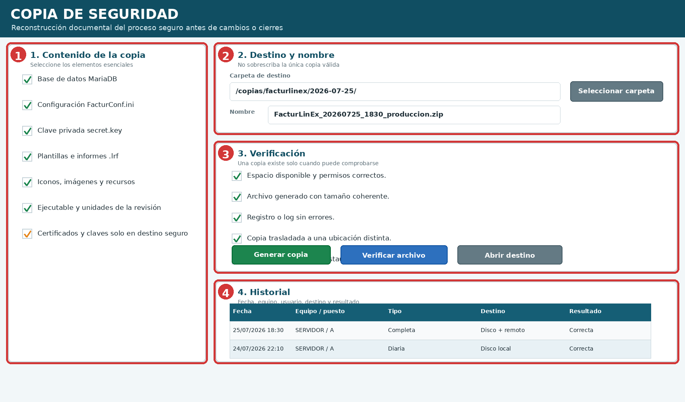
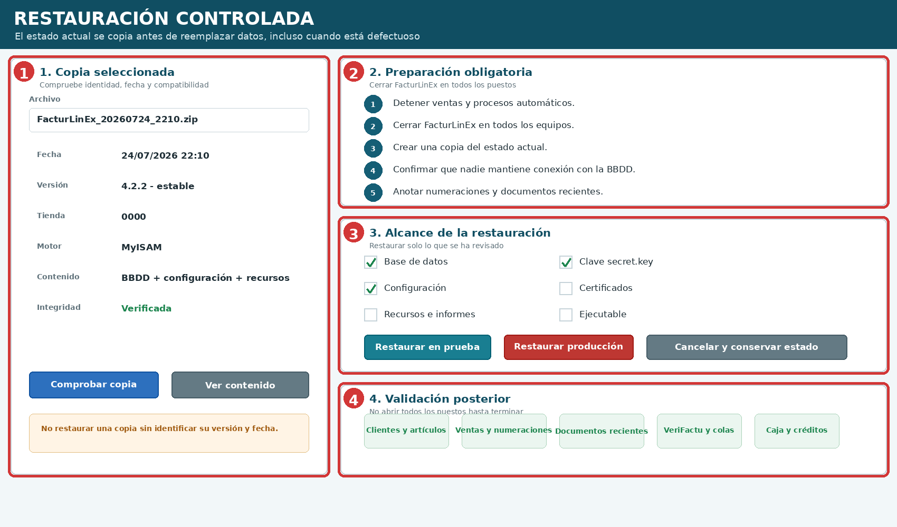
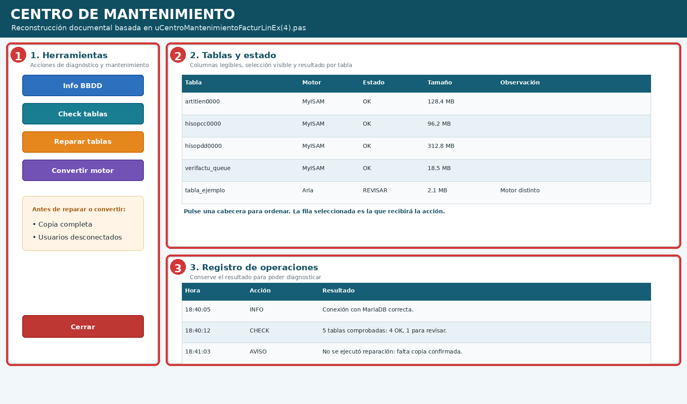
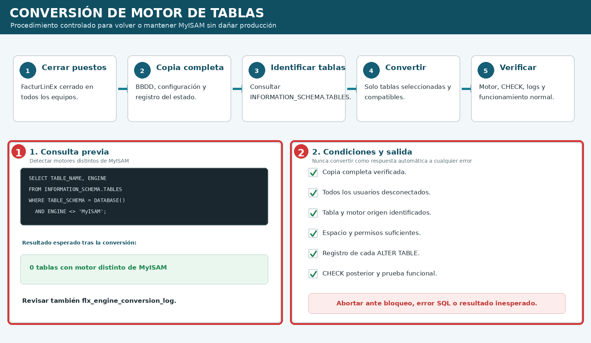
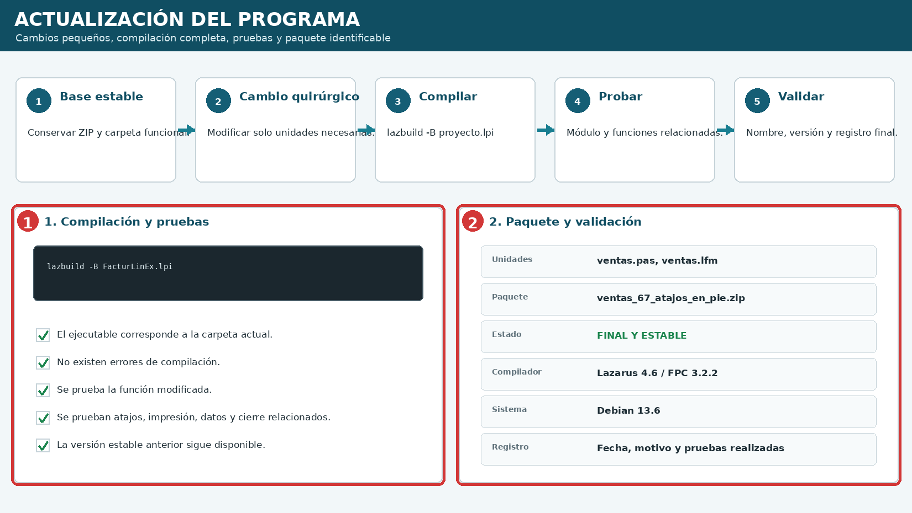

Copias de seguridad y mantenimiento
Edición v1.2 · Mantenimiento y solución de problemas ilustrado
11.1 Política mínima de copias #
La copia debe proteger los datos y todos los elementos necesarios para volver a ejecutar la misma revisión. Una BBDD aislada puede ser insuficiente si faltan configuración, informes, recursos o la clave usada para descifrar contraseñas.
| Momento | Contenido recomendado | Conservación |
|---|---|---|
| Diaria | BBDD, configuración y registro de resultado. | Varias copias recientes. |
| Semanal | Copia completa del entorno. | Varias semanas. |
| Antes de actualizar | BBDD, programa, unidades, informes, iconos y configuración. | Hasta validar. |
| Antes de reparar o convertir | BBDD completa y estado de tablas/motores. | Hasta comprobar funcionamiento. |
| Antes de restaurar | Copia del estado actual, aunque sea defectuoso. | Hasta confirmar la restauración. |

| N.º | Zona | Comprobación |
|---|---|---|
| 1 | Contenido | BBDD, FacturConf.ini, secret.key, informes, recursos y revisión ejecutable. |
| 2 | Destino | Nombre fechado y ubicación que no sustituya la única copia válida. |
| 3 | Verificación | Tamaño, log, integridad y prueba de apertura/restauración. |
| 4 | Historial | Fecha, equipo, tipo, destino y resultado. |
11.2 Creación y verificación de una copia #
- Confirme tienda, puesto, versión estable y destino.
- Evite cambios de estructura mientras se genera.
- Incluya todos los elementos necesarios para reconstruir el entorno.
- Revise log y tamaño del archivo.
- Mantenga una copia en otra ubicación.
- Pruebe periódicamente la restauración en un entorno controlado.
11.3 Restauración controlada #
Debe realizarse con FacturLinEx cerrado en todos los puestos, sin usuarios conectados y después de copiar el estado actual.

| N.º | Zona | Uso |
|---|---|---|
| 1 | Copia | Fecha, versión, tienda, motor, contenido e integridad. |
| 2 | Preparación | Cerrar puestos, detener procesos y copiar el estado actual. |
| 3 | Alcance | BBDD, configuración, secret.key, recursos o ejecutable. |
| 4 | Validación | Clientes, artículos, ventas, numeraciones, VeriFactu, caja y créditos. |
11.4 Centro de Mantenimiento #
Las acciones que alteran tablas deben reservarse a personal autorizado, tras identificar la causa y conservar una copia completa.

| Herramienta | Uso | Precaución |
|---|---|---|
| Info BBDD | Servidor, versión, tablas y motores. | Solo lectura. |
| Check tablas | Comprobar tablas compatibles. | Identificar tabla. |
| Reparar tablas | Reparación con error confirmado. | Copia y usuarios desconectados. |
| Convertir motor | Cambiar tablas seleccionadas. | No ejecutar indiscriminadamente. |
11.5 Conversión segura a MyISAM #
En el entorno actual se prefiere MyISAM. La conversión requiere puestos cerrados, copia verificada y listado previo de tablas con motor distinto.

11.6 Actualización del programa y versión estable #

Parta de una base estable, realice cambios pequeños, compile con lazbuild -B, pruebe el módulo y funciones relacionadas, y registre el ZIP validado.
11.7 Lista final de mantenimiento #
- Copia diaria y log correctos.
- Copia completa en otra ubicación.
- FacturConf.ini y secret.key incluidos.
- Prueba de restauración realizada.
- Puestos cerrados antes de restaurar, reparar o convertir.
- Motor y CHECK verificados.
- Compilación completa con lazbuild -B.
- Versión estable anterior conservada.
- Cuadros, números y leyendas coinciden.